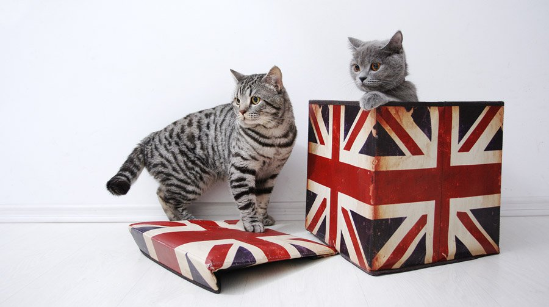

Краткое описание породы
Британская короткошерстная кошка – одна из самых старых крупных пород кошек Великобритании. Изначально порода была известна под названием «британская голубая». Название было связано с характерным окрасом питомца.
Британская голубая была выведена примерно в конце девятнадцатого века. В процессе селекции окрас животного поменялся, поэтому название стало не совсем актуальным. В связи с этим представителей породы начали называть «британскими короткошерстными». На сегодняшний день существует более ста вариаций окраса и узора этих кошек.
Официально британская короткошерстная кошка описывается как сильный питомец, с крепким, коренастым телом, короткими лапами, круглой головой, маленькими, широко посаженными ушами и коротким прямым носом.
Короткая шерсть, похожая на плюш с характерным подшерстком, помогает животному отлично сохранять тепло в прохладные дни. Цвет же шерсти и вариации узоров у этой породы – самые богатые. Волосы могут иметь практически любой оттенок: белый, черный, голубой, рыжий, кремовый, шоколадный, лиловый. Могут быть кошки, шерсть которых имеет двухцветный или трехцветный окрас.
Различным может быть и цвет глаз. Он будет зависеть от окраса шерсти животного. Многие считают, что самый великолепный цвет глаз имеют британские короткошерстные коты белого цвета. У таких питомцев глаза глубокого сапфирового оттенка. Глаза могут быть также темно-золотого, медного или оранжевого цвета. Примечательно, что среди представителей породы довольно часто встречаются животные с разноцветными глазами.
Несколько интересных фактов
- Британская короткошерстная кошка является одной из самых старых и одной из самых крупных пород кошек Великобритании.
- Существует более ста вариаций окраса и узора шерсти кошек этой породы, варьируется и цвет глаз, который во многом зависит от окраса шерсти.
- Британские короткошерстные коты имеют своенравный и достаточно независимый характер. Они не особо охотно идут на контакт с незнакомцами, а ласки и поглаживания принимают только от самых близких людей.